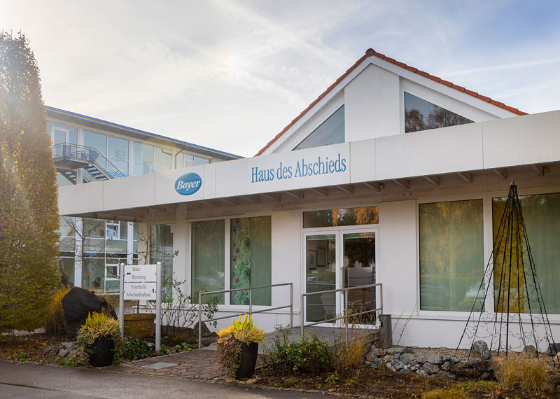
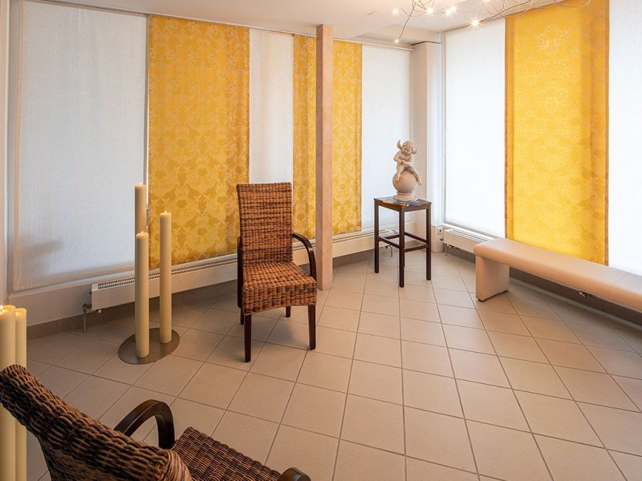
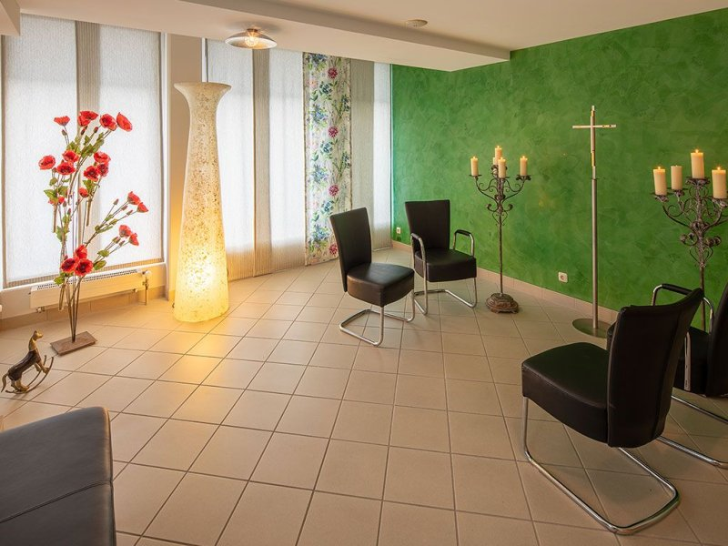
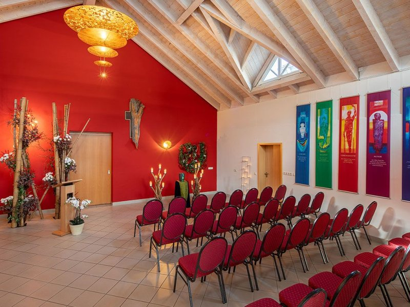
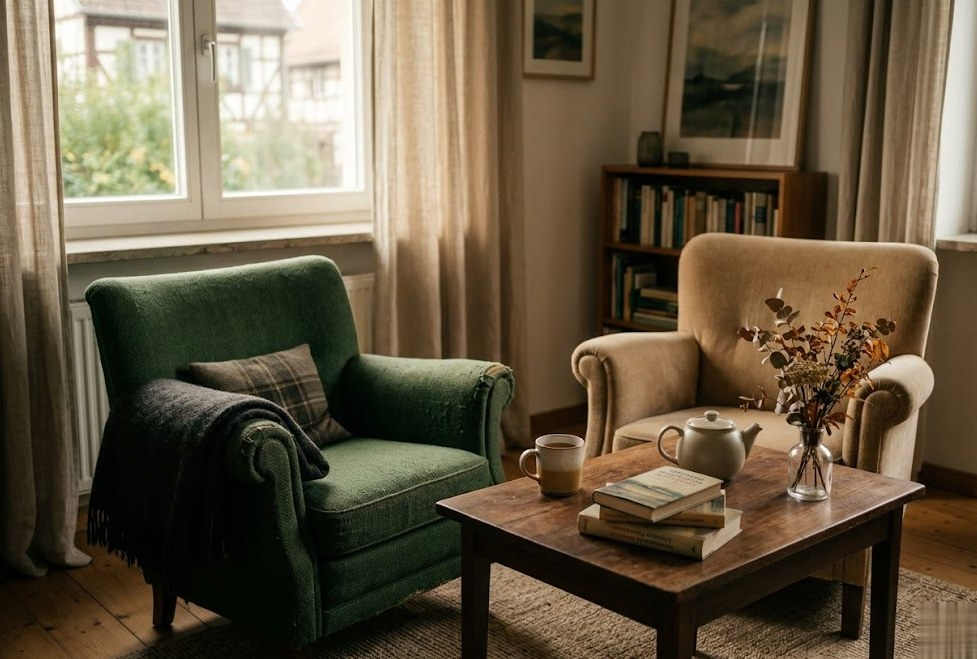
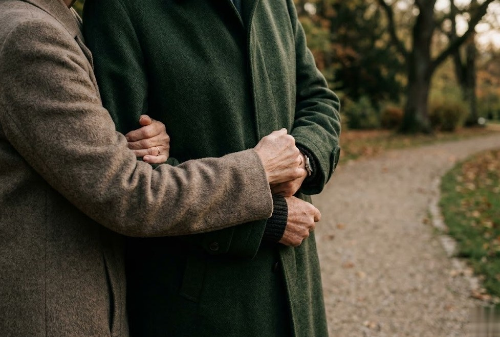

Ein Ort, der dem Abschied Raum gibt.
Abschied nehmen von einem geliebten Menschen ist ein tiefgreifendes Ereignis. Für das gemeinsame Erinnern und Gedenken braucht es einen würdigen, tröstenden Rahmen mit persönlichem Charakter · genau dafür haben wir das Haus des Abschieds geschaffen.

Entstanden aus einer Erfahrung. Gebaut für Menschen.
Die Idee entstand durch Erlebnisse im Berufsalltag, in denen der Trauer und den Bedürfnissen der Angehörigen nach einem würdigen, persönlichen Abschied nicht entsprochen werden konnte. 2009 eröffneten wir deshalb in den ehemaligen Räumen unseres Blumenladens „der Blumen Wiskott" das Haus des Abschieds · das erste seiner Art im Allgäu und in Südbayern. Bis heute ist es einzigartig in der Region.
Seither steht es Hinterbliebenen offen, um ihren Verlust mit Respekt und Würde zu betrauern und sich in Ruhe zu verabschieden. Menschen aller Religionen sind eingeladen, einem Verstorbenen hier die letzte Ehre zu erweisen.
Das Haus wurde bewusst mit Farben gestaltet · denn Farben haben eine positive Wirkung auf Menschen. Sie können beruhigen und Trost spenden.
Die Räume im Haus des Abschieds.





Wir öffnen das Haus für Sie.
Zu jeder Tages- und Nachtzeit · sprechen Sie uns einfach an.
08331 61078